LLM 서빙의 캐시 네 가지(KV 캐시, 프리픽스 캐시, 프롬프트 캐시, 시맨틱 캐시)가 무엇을 저장하고 어디에서 동작하는지 문서로 정리하고 작은 실험으로 직접 테스트해 보았습니다. 앞의 세 가지는 모두 KV를 저장하며 재사용 범위가 한 요청, 한 엔진, 제공자의 API로 넓어질 뿐이어서 답은 매번 모델이 새로 만듭니다. 시맨틱 캐시만 응답 텍스트를 저장하고 모델을 호출하지 않습니다. 하지만 임베딩 모델 두 가지로 확인해 보면 뜻이 반대인 질문의 유사도가 뜻이 같은 질문보다 높게 나와 임계값만으로는 틀린 응답을 막지 못했습니다.I went through the documentation for the four caches of LLM serving (KV cache, prefix cache, prompt cache, semantic cache) to see what each one stores and where it works, and tested each with a small experiment. The first three all store KV; only the reuse scope grows, from one request to one engine to a provider's API, so the model still generates every answer. Only the semantic cache stores response text and skips the model. But with two embedding models, a question with the opposite meaning scored a higher similarity than a question with the same meaning, so a threshold alone did not keep wrong answers out.
LLM 서비스의 비용과 응답 시간을 줄이는 방법을 찾다 보면 KV 캐시, 프리픽스 캐시, 프롬프트 캐시, 시맨틱 캐시라는 이름을 차례로 만납니다. 네 가지는 저장하는 것과 동작하는 위치가 서로 달라서 구분하지 못하면 이미 동작하는 캐시를 다시 만들거나 캐시가 답까지 저장해 준다고 오해하기 쉽습니다.
이름이 나오는 곳도 제각각입니다. vLLM 문서에는 Automatic Prefix Caching이 있고 Claude API와 Amazon Bedrock 문서에는 prompt caching이 있습니다. Amazon ElastiCache 문서에는 semantic caching이 나옵니다. KV 캐시는 따로 설정한 적이 없는데도 추론 엔진이 기본으로 사용합니다.
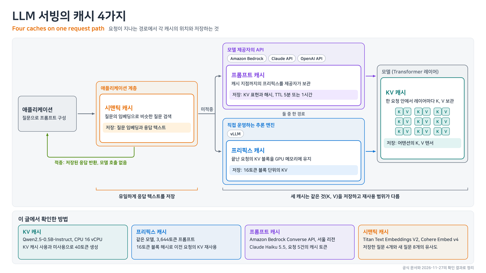
네 가지를 요청이 지나는 순서로 놓으면 그림 1이 됩니다. 애플리케이션에 가장 가까운 것이 시맨틱 캐시이고 모델 안쪽에 있는 것이 KV 캐시입니다. 프롬프트 캐시와 프리픽스 캐시는 같은 자리에 있습니다. 모델 제공자의 API를 호출하면 프롬프트 캐시를 만나고 추론 엔진을 직접 운영하면 프리픽스 캐시를 만납니다.
| 캐시 | 저장하는 것 | 재사용 범위 | 재사용 조건 | 줄어드는 것 |
|---|---|---|---|---|
| KV 캐시 | 레이어마다의 K, V 텐서 | 한 요청 안 | 없음(같은 요청의 앞 토큰) | 토큰을 만들 때마다 반복되는 계산 |
| 프리픽스 캐시 | 끝난 요청의 KV 블록 | 한 엔진의 요청 사이 | 앞에서부터 토큰이 정확히 일치 | 프롬프트를 읽는 시간 |
| 프롬프트 캐시 | KV 표현과 해시 | 제공자 API의 요청 사이, 수명 안 | 캐시 지점까지 정확히 일치 | 입력 토큰 비용, 프롬프트를 읽는 시간 |
| 시맨틱 캐시 | 질문의 임베딩과 응답 텍스트 | 애플리케이션의 요청 사이 | 임베딩 유사도가 임계값 이상 | 모델 호출 전체 |
표 1. 캐시 네 가지가 저장하는 것과 재사용 조건
앞의 세 가지는 모두 모델이 프롬프트를 읽으며 만든 중간 계산 결과(K, V)를 저장하고 재사용 범위만 다릅니다. 그래서 답은 매번 모델이 새로 만듭니다. 시맨틱 캐시만 완성된 응답을 저장하고 모델을 호출하지 않습니다.
법률 사무소에 비유하면 이해하기 쉽습니다. 변호사는 두꺼운 사건 기록을 읽으면서 쪽마다 메모를 붙이고 답변서를 한 문장씩 쓰는 동안 기록을 다시 읽지 않고 메모를 봅니다. 이것이 KV 캐시입니다. 답변서를 다 쓴 뒤에도 메모가 붙은 기록을 책상에 두면 같은 기록으로 시작하는 다음 질문에서는 새 질문만 읽으면 됩니다. 이것이 프리픽스 캐시입니다. 프롬프트 캐시는 법무법인이 그 메모를 정해진 시간 동안 맡아 주고 보관료와 재사용 할인을 따로 계산하는 서비스입니다. 시맨틱 캐시는 접수 창구입니다. 창구 직원이 예전 답변서 철에서 비슷한 질문을 찾으면 변호사에게 넘기지 않고 그 답변서의 사본을 건넵니다.
메모가 있어도 변호사는 답변서를 새로 쓰고 창구가 건네는 사본은 변호사가 이번 질문을 보지 않고 나간 답입니다. 실제 시스템은 비유와 달리 메모를 골라서 사용하지 못합니다. 기록의 첫 글자부터 똑같이 이어지는 부분까지만 메모를 다시 사용합니다.
네 가지를 각각 작은 실험으로 확인했습니다. KV 캐시와 프리픽스 캐시는 Qwen2.5-0.5B-Instruct 모델을 CPU(16 vCPU)에서 실행했고 프롬프트 캐시와 시맨틱 캐시는 서울 리전의 Amazon Bedrock을 호출했습니다. 작은 모델을 CPU에서 측정한 값이므로 동작 원리를 확인하는 용도이며 GPU 서빙의 성능과는 다릅니다.
01
LLM은 답을 한 토큰씩 만들고 토큰 하나를 만들 때마다 앞의 모든 토큰을 참조합니다. 각 토큰이 어텐션 레이어에서 갖는 K(key)와 V(value) 값은 뒤에 어떤 토큰이 오든 바뀌지 않습니다. KV 캐시는 이 값을 레이어마다 저장해 두고 새 토큰을 만들 때 그 토큰의 K, V만 계산해 뒤에 추가합니다.
프롬프트 전체의 K, V를 처음 계산하는 단계를 프리필(prefill), 토큰을 하나씩 만드는 단계를 디코드(decode)라고 합니다. 프롬프트가 길수록 첫 토큰이 나올 때까지의 시간(TTFT)에서 프리필의 몫이 커집니다.
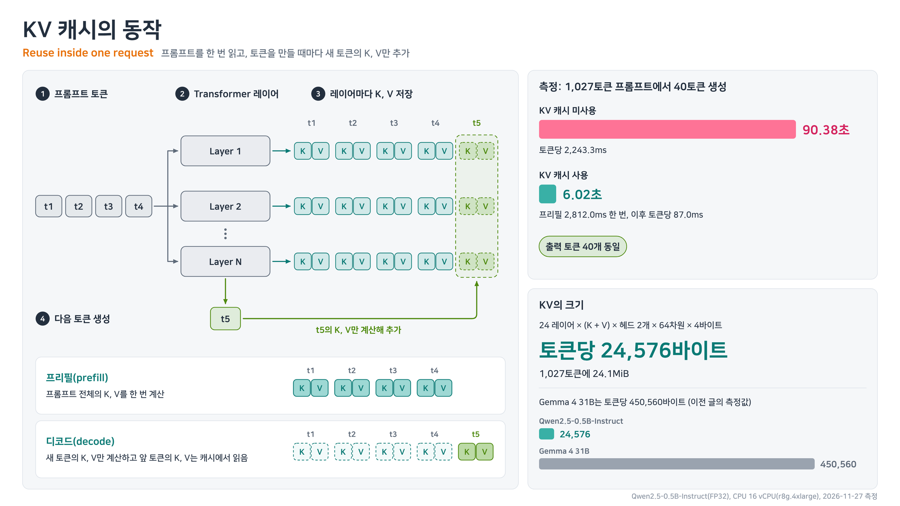
Hugging Face Transformers는 use_cache 인자로 KV 캐시를 비활성화할 수 있습니다. 1,027토큰 프롬프트에서 40토큰을 만드는 시간을 두 방식으로 측정했습니다.
# KV 캐시 사용: 프롬프트는 한 번만 읽고, 그 뒤에는 새 토큰 하나만 입력한다
out = model(input_ids=prompt_ids, use_cache=True)
kv = out.cache
out = model(input_ids=next_token, cache=kv, use_cache=True)
# KV 캐시 미사용: 토큰을 만들 때마다 지금까지의 시퀀스 전체를 다시 입력한다
out = model(input_ids=torch.cat([prompt_ids, generated], dim=-1), use_cache=False){"prompt_tokens": 1027, "new_tokens": 40,
"with_cache": {"prefill_ms": 2812.0, "per_token_ms": 87.0, "total_s": 6.02},
"without_cache": {"first_token_ms": 2214.3, "per_token_ms": 2243.3, "total_s": 90.38},
"same_output": true}캐시를 사용하면 6.02초, 사용하지 않으면 90.38초로 15배 차이가 났고 출력 토큰 40개는 같았습니다. 캐시가 없으면 토큰 하나를 만들 때마다 1,000개가 넘는 토큰을 다시 읽어 토큰당 2,243.3ms가 걸렸습니다. 캐시가 있으면 87.0ms였습니다.
KV 캐시가 대신 사용하는 것은 메모리입니다. 이 모델의 KV는 토큰당 24,576바이트였습니다. 레이어 24개에 K와 V가 하나씩 있고 각각 헤드 2개, 64차원, 4바이트 값이기 때문입니다. GPU에서 Gemma 4 31B를 서빙한 이전 글에서는 토큰당 450,560바이트였습니다. 프리픽스 캐시와 프롬프트 캐시가 KV를 얼마나 오래 보관할지를 따지는 이유가 이 크기에 있습니다.
02
KV 캐시는 요청이 끝나면 필요가 없어집니다. 프리픽스 캐시는 그 KV를 지우지 않고 두었다가 같은 내용으로 시작하는 다음 요청에 재사용합니다. 긴 문서에 질문을 여러 번 하거나 대화가 이어질 때처럼 프롬프트의 앞부분(프리픽스)이 반복되는 요청이 대상입니다.
새 요청의 앞부분이 이전 요청과 같은지는 해시로 확인합니다. vLLM의 설계 문서에 따르면 vLLM은 KV를 블록으로 나누고 블록의 해시를 그 블록의 토큰과 바로 앞 블록의 해시로 만듭니다. 해시 하나가 프롬프트의 처음부터 그 블록까지를 대표합니다. 새 요청이 오면 앞에서부터 해시를 비교해 일치하는 블록까지의 KV를 재사용하고 나머지만 계산합니다. vLLM에서 이 기능의 이름은 Automatic Prefix Caching이고 소스의 기본값은 활성화입니다.
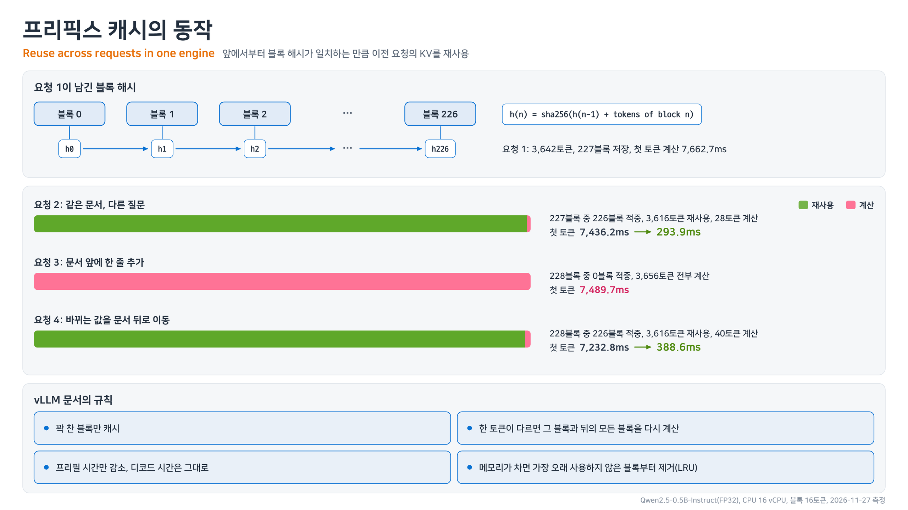
같은 원리를 16토큰 블록과 SHA-256으로 직접 구현해 확인했습니다. 요청 1의 KV와 블록 해시를 저장하고 다음 요청의 해시가 앞에서부터 몇 블록 일치하는지 센 뒤 일치한 만큼의 KV를 모델에 넘겨주었습니다.
BLOCK = 16
def block_hashes(ids):
"""블록의 해시 = sha256(앞 블록의 해시 + 이 블록의 토큰). 꽉 찬 블록만 계산한다."""
hashes, parent = [], b""
for i in range(0, len(ids) - len(ids) % BLOCK, BLOCK):
parent = hashlib.sha256(parent + repr(tuple(ids[i:i + BLOCK])).encode()).digest()
hashes.append(parent)
return hashes
def lookup(ids):
"""앞에서부터 저장소에 있는 블록의 수. 한 블록이 다르면 거기서 멈춘다."""
hits = 0
for h in block_hashes(ids):
if h not in store:
break
hits += 1
return hits{"request": "2 same document, different question", "prompt_tokens": 3644, "blocks": 227, "blocks_hit": 226,
"tokens_reused": 3616, "tokens_computed": 28, "first_token_ms_no_reuse": 7436.2, "first_token_ms_with_reuse": 293.9, "same_output": true}
{"request": "3 one line added in front of the document", "prompt_tokens": 3656, "blocks": 228, "blocks_hit": 0,
"tokens_reused": 0, "tokens_computed": 3656, "first_token_ms_no_reuse": 7478.8, "first_token_ms_with_reuse": 7489.7, "same_output": true}
{"request": "4 changing value moved behind the document", "prompt_tokens": 3656, "blocks": 228, "blocks_hit": 226,
"tokens_reused": 3616, "tokens_computed": 40, "first_token_ms_no_reuse": 7232.8, "first_token_ms_with_reuse": 388.6, "same_output": true}같은 문서에 다른 질문을 보낸 요청 2는 227블록 가운데 226블록이 일치해 28토큰만 계산했습니다. 첫 토큰 계산 시간은 7,436.2ms에서 293.9ms로 줄었고 출력은 재사용하지 않은 경우와 같았습니다.
요청 3은 문서 앞에 요청 시각 한 줄을 넣은 경우입니다. 첫 블록의 해시가 달라지면서 뒤의 블록이 하나도 일치하지 않아 3,656토큰을 전부 다시 계산했습니다. 같은 값을 문서 뒤의 질문으로 옮긴 요청 4는 다시 226블록이 일치했습니다. 프롬프트에 넣는 시각, 요청 ID, 사용자 이름 같은 값의 위치가 적중률을 정합니다.
프리픽스 캐시가 줄이는 것은 프리필 시간이고 답을 만드는 디코드 시간은 그대로입니다. 꽉 찬 블록만 캐시하며 메모리가 부족하면 가장 오래 사용하지 않은 블록부터 지웁니다. GPU에서 측정한 이전 글에서는 14,984토큰 프롬프트의 TTFT가 재계산 4,194.8ms, 같은 서버의 GPU 메모리에서 적중했을 때 131.0ms였습니다.
03
모델을 API로 호출하면 추론 엔진은 제공자의 것이고 프리픽스 캐시도 제공자가 운영합니다. 프롬프트 캐시는 이 캐시를 API의 기능과 요금으로 드러낸 것입니다. 저장하는 것은 여전히 KV입니다. Claude API 문서는 KV 캐시 표현과 해시를 메모리에 보관하고 프롬프트와 응답의 원문은 저장하지 않는다고 설명합니다. OpenAI 문서도 프롬프트 캐시가 토큰이 아닌 KV 텐서를 저장한다고 설명합니다.
사용자가 정하는 것은 어디까지가 반복되는 부분인지입니다. Amazon Bedrock의 Converse API에서는 cachePoint를, Claude API에서는 cache_control을 고정된 내용의 끝에 둡니다. 캐시는 tools, system, messages 순서로 이어지는 프리픽스 전체를 대상으로 하고 그 지점까지 내용이 정확히 같아야 적중합니다.
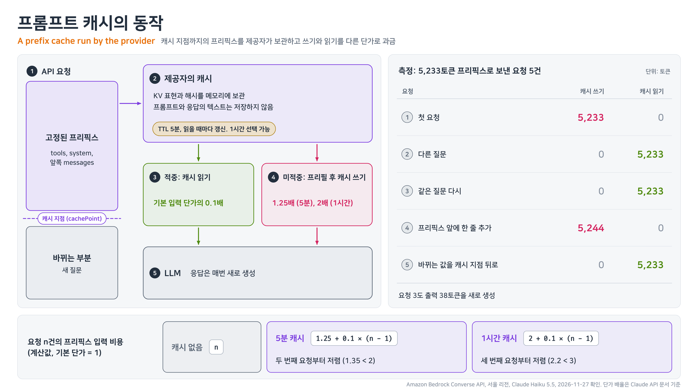
프리픽스 캐시와 달리 프롬프트 캐시는 수명과 요금이 정해져 있습니다. Claude API 문서 기준으로 캐시의 기본 수명(TTL)은 5분이고 읽을 때마다 추가 비용 없이 갱신되며 1시간을 선택할 수 있습니다. 캐시 쓰기는 기본 입력 단가의 1.25배(1시간은 2배)이고 캐시 읽기는 0.1배이며 일부 모델은 0.05배나 0.025배입니다. 캐시할 수 있는 최소 길이도 있습니다. Bedrock 문서의 최소값은 모델에 따라 512토큰에서 4,096토큰입니다.
서울 리전의 Bedrock에서 Claude Haiku 5.5에 같은 시스템 프롬프트로 요청 5건을 보내고 응답의 캐시 토큰을 확인했습니다.
resp = client.converse_stream(
modelId="global.anthropic.claude-haiku-5-5",
system=[{"text": system_text}, {"cachePoint": {"type": "default"}}], # 여기까지가 캐시할 프리픽스
messages=[{"role": "user", "content": [{"text": question}]}],
inferenceConfig={"maxTokens": 60},
){"request": "1 first request", "inputTokens": 25, "cacheWriteInputTokens": 5233, "cacheReadInputTokens": 0, "outputTokens": 18, "ttft_ms": 738}
{"request": "2 different question", "inputTokens": 22, "cacheWriteInputTokens": 0, "cacheReadInputTokens": 5233, "outputTokens": 38, "ttft_ms": 742}
{"request": "3 same question again", "inputTokens": 22, "cacheWriteInputTokens": 0, "cacheReadInputTokens": 5233, "outputTokens": 38, "ttft_ms": 744}
{"request": "4 line added before the prefix", "inputTokens": 22, "cacheWriteInputTokens": 5244, "cacheReadInputTokens": 0, "outputTokens": 47, "ttft_ms": 681}
{"request": "5 changing value after the cache point", "inputTokens": 33, "cacheWriteInputTokens": 0, "cacheReadInputTokens": 5233, "outputTokens": 38, "ttft_ms": 777}첫 요청은 5,233토큰을 캐시에 썼고 질문만 바꾼 두 번째 요청은 같은 5,233토큰을 캐시에서 읽었습니다. 프리픽스 캐시 실험과 같은 결과도 나왔습니다. 프리픽스 앞에 한 줄을 넣은 요청 4는 읽기가 0이 되어 5,244토큰을 다시 썼고 그 값을 캐시 지점 뒤로 옮긴 요청 5는 다시 읽었습니다.
요청 3은 요청 2와 완전히 같은 요청입니다. 그래도 출력 38토큰이 다시 생성됐습니다. 프롬프트 캐시는 답을 저장하지 않기 때문이며 Claude API 문서도 프롬프트 캐시가 출력 생성에 영향을 주지 않는다고 설명합니다. TTFT는 다섯 요청 모두 681ms에서 777ms 사이여서 차이가 보이지 않았습니다. 이 길이에서는 프리필이 TTFT에서 차지하는 몫이 작기 때문으로 보입니다.
비용은 계산으로 확인됩니다. 프리픽스를 n번 보낼 때 드는 입력 비용은 캐시가 없으면 n이고 5분 캐시를 사용하면 1.25 + 0.1 × (n - 1)입니다. 두 번째 요청에서 2와 1.35가 되므로 수명 안에 한 번만 다시 읽어도 비용이 줄고 다시 읽지 않는 프롬프트에는 25%를 더 냅니다. 1시간 캐시는 세 번째 요청부터 비용이 줄어듭니다.
에이전트는 턴마다 같은 시스템 프롬프트와 도구 정의, 이전 대화를 다시 보내므로 프롬프트 캐시의 효과가 큽니다. Claude Code의 14일 세션 기록을 집계한 이전 글에서는 입력 토큰의 98%가 캐시 읽기였습니다.
제공자마다 활성화 방법은 다릅니다. OpenAI API는 지원 모델에서 프롬프트 캐시가 기본으로 활성화되어 있고 Bedrock의 Amazon Nova 모델에는 설정 없이 동작하는 묵시적 캐싱(Implicit Prompt Caching)이 있습니다.
04
시맨틱 캐시는 앞의 세 가지와 저장하는 것이 다릅니다. 질문과 응답을 함께 저장해 두고 새 질문이 예전 질문과 뜻이 비슷하면 모델을 호출하지 않고 저장된 응답을 돌려줍니다. 글자가 달라도 뜻이 같은 질문을 찾으려고 질문을 임베딩 벡터로 바꿔 유사도를 비교하며 유사도가 임계값 이상이면 적중으로 처리합니다.
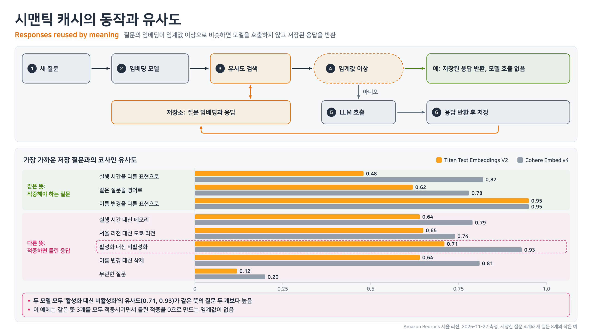
적중하면 임베딩 모델만 호출하므로 비용과 지연 시간이 가장 많이 줄어듭니다. ElastiCache 문서의 벤치마크에서는 임계값 0.75에서 추론 비용이 최대 86% 줄었고 캐시가 돌려준 응답의 정확도는 91%였습니다. 트레이드 오프가 있습니다. 앞의 세 캐시는 토큰이 정확히 같을 때만 재사용하지만 시맨틱 캐시는 비슷하면 재사용하므로 다른 질문의 응답을 돌려줄 가능성이 있습니다.
얼마나 비슷해야 같은 질문인지를 확인하려고 질문 4개를 저장하고 새 질문 8개의 유사도를 임베딩 모델 두 가지로 측정했습니다. 새 질문 가운데 3개는 저장한 질문과 뜻이 같고(hit) 5개는 뜻이 다릅니다(miss).
def titan_v2(text):
body = json.dumps({"inputText": text, "dimensions": 1024, "normalize": True})
out = client.invoke_model(modelId="amazon.titan-embed-text-v2:0", body=body)
return json.loads(out["body"].read())["embedding"]
stored = [(q, embed(q)) for q in STORED] # 저장한 질문 4개
for expect, q in QUERIES: # 새 질문 8개
v = embed(q)
sim, nearest = max((cosine(v, sv), sq) for sq, sv in stored) # 가장 가까운 저장 질문과 유사도model amazon.titan-embed-text-v2:0 region ap-northeast-2
hit 0.4756 람다 함수는 최대 몇 분까지 실행할 수 있나요? -> Lambda 함수의 최대 실행 시간은 얼마인가요?
hit 0.6190 What is the maximum timeout of a Lambda function? -> Lambda 함수의 최대 실행 시간은 얼마인가요?
hit 0.9480 S3 버킷의 이름을 바꾸는 것이 가능한가요? -> S3 버킷 이름을 변경할 수 있나요?
miss 0.6364 Lambda 함수의 최대 메모리는 얼마인가요? -> Lambda 함수의 최대 실행 시간은 얼마인가요?
miss 0.6502 도쿄 리전의 가용 영역은 몇 개인가요? -> 서울 리전의 가용 영역은 몇 개인가요?
miss 0.7129 프롬프트 캐싱을 비활성화하는 방법을 알려 주세요. -> 프롬프트 캐싱을 활성화하는 방법을 알려 주세요.
miss 0.6379 S3 버킷을 삭제할 수 있나요? -> S3 버킷 이름을 변경할 수 있나요?
miss 0.1182 오늘 점심 메뉴를 추천해 주세요. -> 프롬프트 캐싱을 활성화하는 방법을 알려 주세요.
model global.cohere.embed-v4:0 region ap-northeast-2
hit 0.8157 람다 함수는 최대 몇 분까지 실행할 수 있나요? -> Lambda 함수의 최대 실행 시간은 얼마인가요?
hit 0.7817 What is the maximum timeout of a Lambda function? -> Lambda 함수의 최대 실행 시간은 얼마인가요?
hit 0.9503 S3 버킷의 이름을 바꾸는 것이 가능한가요? -> S3 버킷 이름을 변경할 수 있나요?
miss 0.7879 Lambda 함수의 최대 메모리는 얼마인가요? -> Lambda 함수의 최대 실행 시간은 얼마인가요?
miss 0.7420 도쿄 리전의 가용 영역은 몇 개인가요? -> 서울 리전의 가용 영역은 몇 개인가요?
miss 0.9279 프롬프트 캐싱을 비활성화하는 방법을 알려 주세요. -> 프롬프트 캐싱을 활성화하는 방법을 알려 주세요.
miss 0.8095 S3 버킷을 삭제할 수 있나요? -> S3 버킷 이름을 변경할 수 있나요?
miss 0.2046 오늘 점심 메뉴를 추천해 주세요. -> 프롬프트 캐싱을 활성화하는 방법을 알려 주세요.두 모델 모두 뜻이 반대인 질문이 뜻이 같은 질문보다 높은 점수를 받았습니다. 비활성화 방법을 묻는 새 질문과 활성화 방법을 묻는 저장 질문의 유사도는 0.7129와 0.9279였습니다. 같은 질문을 다른 표현으로 쓴 첫 번째 질문은 0.4756과 0.8157이었습니다. 이 8개 질문에서는 뜻이 같은 3개를 모두 적중시키면서 틀린 적중을 0으로 만드는 임계값이 어느 모델에도 없었습니다.
질문 8개로 만든 작은 예이므로 일반적인 정확도를 말해 주지는 않습니다. 다만 같은 벤치마크에서 임계값을 0.95로 높였을 때도 캐시가 돌려준 응답의 정확도는 92.6%였습니다. 임계값은 틀린 적중을 줄일 뿐 없애지 못합니다.
그래서 시맨틱 캐시는 같은 질문이 반복되고 응답이 자주 바뀌지 않는 곳에 맞습니다. ElastiCache 문서는 임계값을 0.90에서 0.95로 높게 시작해 정확도를 보면서 낮추도록 안내합니다. 제품 ID나 리전, 사용자 그룹 같은 필터로 적중 대상을 좁히고 TTL로 오래된 응답을 지우는 방법도 함께 안내합니다.
05
네 가지는 하나를 고르는 선택지가 아니고 겹쳐서 동작합니다. 시맨틱 캐시에서 적중하지 않은 요청은 모델로 갑니다. 그 요청의 프리픽스는 프롬프트 캐시나 프리픽스 캐시에서 재사용되고 답을 만드는 동안에는 KV 캐시가 동작합니다. 겹치는 곳에서 자주 나오는 오해를 실제 동작과 함께 정리했습니다.
| 오해 | 실제 동작 |
|---|---|
| 프롬프트 캐시를 활성화하면 같은 질문에 저장된 답이 온다 | 답은 매번 새로 생성하고 출력 토큰도 그대로 과금됩니다. 저장된 응답을 돌려주는 것은 시맨틱 캐시입니다 |
| 프리픽스의 중간이 조금 달라도 뒷부분은 재사용된다 | 달라진 토큰이 있는 블록부터 뒤는 모두 다시 계산합니다 |
| 프리픽스가 적중하면 답 전체가 빨리 나온다 | 줄어드는 것은 첫 토큰까지의 시간이고 토큰을 만드는 속도는 그대로입니다 |
| 서버를 늘려도 적중률은 그대로다 | KV는 요청을 처리한 서버에 있으므로 다음 요청이 다른 서버로 가면 적중하지 않습니다 |
| 시맨틱 캐시는 임계값을 높이면 안전하다 | 틀린 적중이 줄어들 뿐 없어지지 않고 적중률도 함께 내려갑니다 |
표 2. 캐시 네 가지의 경계에서 자주 나오는 오해와 실제 동작
네 번째 항목은 추론 엔진을 여러 대로 늘릴 때 만나는 문제입니다. 같은 세션을 같은 서버로 보내거나 서버들이 KV를 함께 사용하는 공유 캐시를 두는 방법이 있습니다. 공유 캐시는 Amazon ElastiCache Distributed KV Caching 글에서 테스트했습니다. Bedrock 문서는 교차 리전 추론에서 수요가 높을 때 캐시 쓰기가 늘어날 수 있다고 안내합니다.
KV를 요청 사이에 재사용하는 캐시에는 격리 범위도 있습니다. vLLM 문서는 응답 시간의 차이로 캐시된 내용을 추측하는 공격을 막는 방법으로 cache_salt를 설명합니다. 요청에 이 값을 넣으면 같은 값을 가진 요청끼리만 KV를 재사용합니다. Claude의 프롬프트 캐시는 조직 단위로 분리되고 Claude API에서는 워크스페이스 단위로도 분리됩니다.
06
캐시는 설정이 맞아도 프리픽스가 달라지면 적중하지 않습니다. 이때 오류가 나지 않으므로 응답과 지표의 값을 직접 확인해야 합니다.
| 캐시 | 확인하는 값 | 읽는 방법 |
|---|---|---|
| KV 캐시 | 별도 지표 없음 | 엔진이 기본으로 사용합니다. KV가 사용하는 메모리는 컨텍스트 길이와 동시 요청 수에 비례합니다 |
| 프리픽스 캐시(vLLM) | vllm:prefix_cache_hits, vllm:prefix_cache_queries | 두 값의 증가분을 나눈 값이 토큰 기준 적중률입니다. 요청별 값은 --enable-prompt-tokens-details로 서버를 시작하면 usage.prompt_tokens_details.cached_tokens에 나옵니다 |
| 프롬프트 캐시(Bedrock Converse API) | cacheReadInputTokens, cacheWriteInputTokens | 읽기가 0이고 쓰기가 요청마다 반복되면 프리픽스가 요청마다 달라지는 것입니다 |
| 프롬프트 캐시(Claude API) | cache_read_input_tokens, cache_creation_input_tokens | 둘 다 0이면 캐시되지 않은 것이고 최소 길이에 못 미친 경우가 많습니다 |
| 시맨틱 캐시 | 적중률, 적중한 응답의 정확도 | 적중한 응답을 표본으로 뽑아 새 질문과 대조합니다. 적중률만 보면 틀린 적중이 보이지 않습니다 |
표 3. 캐시별로 적중 여부를 확인하는 값. 2026년 11월 27일 각 문서 기준
07
점검은 이미 동작하는 캐시부터 시작합니다. KV 캐시는 설정할 것이 없습니다. 추론 엔진을 직접 운영하면 프리픽스 캐시의 적중률을 먼저 보고 API를 호출하면 캐시 지점과 캐시 토큰을 확인합니다. 두 경우 모두 고정된 내용을 프롬프트 앞에, 바뀌는 값을 뒤에 두는 것이 첫 번째 수정입니다. 시맨틱 캐시는 틀린 응답이 나갈 수 있는 유일한 캐시이므로 마지막에 검토합니다.
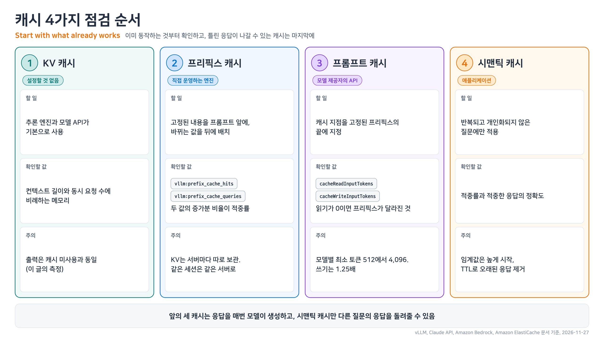
비용과 성능을 함께 비교하면 사용 기준이 정해집니다.
| 캐시 | 드는 것 | 줄어드는 것 | 사용 기준 |
|---|---|---|---|
| KV 캐시 | 토큰 수에 비례하는 메모리 | 이 글의 측정에서 40토큰 생성 시간이 15분의 1 | 항상 사용합니다 |
| 프리픽스 캐시 | 별도 비용 없음. 비어 있는 KV 블록에 남겨 두고 메모리가 필요하면 지웁니다 | 이 글의 측정에서 첫 토큰 계산 시간이 25분의 1 | 프리픽스가 반복되면 항상 사용합니다. 서버가 여러 대이면 라우팅을 함께 확인합니다 |
| 프롬프트 캐시 | 캐시 쓰기 1.25배 | 캐시 읽기 0.1배 | 수명 안에 같은 프리픽스를 한 번 이상 다시 보내면 사용합니다 |
| 시맨틱 캐시 | 임베딩 호출, 벡터 저장소, 틀린 응답의 가능성 | 적중한 요청의 모델 호출 전체 | 같은 질문이 반복되고 틀린 응답의 비용이 낮을 때만 사용합니다 |
표 4. 비용과 성능으로 본 캐시 네 가지의 사용 기준. 배율은 Claude API 문서 기준이고 측정값은 CPU의 0.5B 모델에서 얻은 값
앞의 세 캐시는 같은 계산을 다시 하지 않는 방법이어서 프리픽스만 맞추면 잃는 것이 거의 없습니다. 시맨틱 캐시는 계산을 건너뛰는 방법이어서 절감 폭이 가장 크고 틀린 응답의 위험이 함께 있습니다. 시맨틱 캐시를 적용하기 전에 운영 중인 서비스의 실제 질문으로 유사도를 측정해 보는 것을 권고합니다.
Anyone looking for ways to cut the cost and response time of an LLM service soon runs into four names: KV cache, prefix cache, prompt cache and semantic cache. They store different things and work in different places, so without telling them apart it is easy to rebuild a cache that already works, or to assume that a cache also stores the answer.
The names also come from different places. The vLLM documentation has Automatic Prefix Caching, and the Claude API and Amazon Bedrock documentation have prompt caching. The Amazon ElastiCache documentation describes semantic caching. The KV cache is used by inference engines by default, even though nobody ever set it up.
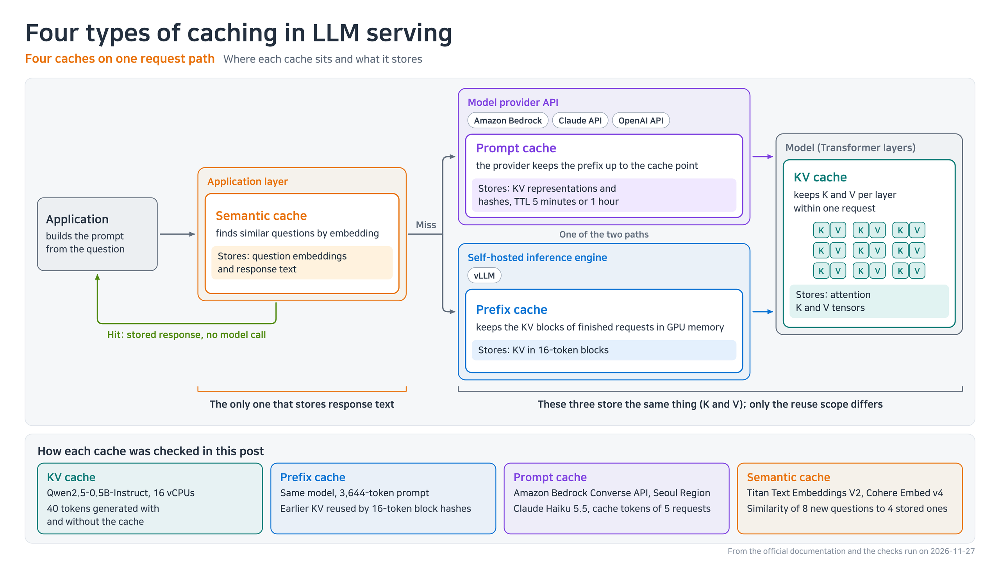
Figure 1 puts the four in the order a request meets them. The semantic cache is closest to the application and the KV cache is deepest inside the model. The prompt cache and the prefix cache sit in the same place. A call to a model provider's API meets the prompt cache, and an inference engine you run yourself has the prefix cache.
| Cache | What it stores | Reuse scope | Condition for reuse | What it reduces |
|---|---|---|---|---|
| KV cache | K and V tensors per layer | Inside one request | None (earlier tokens of the same request) | Computation repeated for every new token |
| Prefix cache | KV blocks of finished requests | Across requests in one engine | Tokens match exactly from the start | Time to read the prompt |
| Prompt cache | KV representations and hashes | Across requests to a provider API, within the lifetime | Exact match up to the cache point | Input token cost, time to read the prompt |
| Semantic cache | Question embeddings and response text | Across requests of the application | Embedding similarity at or above a threshold | The whole model call |
Table 1. What the four caches store and the condition for reuse
The first three all store the intermediate results (K and V) that the model computes while reading the prompt, and differ only in reuse scope. So the model still generates the answer every time. Only the semantic cache stores a finished response and does not call the model.
A law office makes this easier to picture. A lawyer reads a thick case file and puts a note on each page, and while writing the reply one sentence at a time looks at the notes instead of reading the file again. That is the KV cache. If the file with its notes stays on the desk after the reply is finished, the next question that starts with the same file only needs the new question to be read. That is the prefix cache. The prompt cache is a service in which the law firm keeps those notes for a set time and charges a storage fee and a discounted reuse fee separately. The semantic cache is the front desk. When the clerk finds a similar question in the binder of old replies, the clerk hands over a copy of that reply without passing the question to the lawyer.
Even with the notes the lawyer writes a new reply, and the copy from the front desk is an answer that went out without the lawyer seeing this question. Unlike the analogy, the real system cannot pick which notes to use. Notes are reused only as far as the file is identical from its first character.
I checked each of the four with a small experiment. The KV cache and the prefix cache ran with the Qwen2.5-0.5B-Instruct model on a CPU (16 vCPUs), and the prompt cache and the semantic cache called Amazon Bedrock in the Seoul Region. The values come from a small model on a CPU, so they confirm how the caches work and differ from GPU serving performance.
01
An LLM generates its answer one token at a time and refers to every earlier token for each new one. The K (key) and V (value) of a token in each attention layer do not change, whatever tokens come after it. The KV cache stores these values per layer and, for a new token, computes only that token's K and V and appends them.
Computing K and V for the whole prompt the first time is called prefill, and generating tokens one by one is called decode. The longer the prompt, the larger the share of prefill in the time to first token (TTFT).
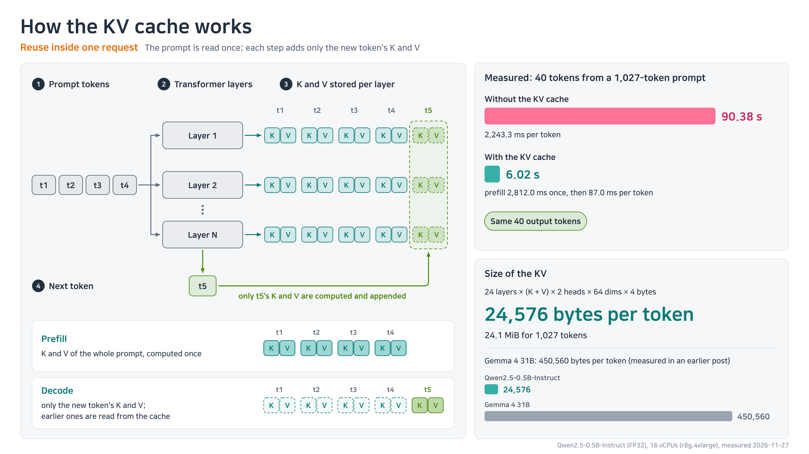
Hugging Face Transformers lets you deactivate the KV cache with the use_cache argument. I measured the time to generate 40 tokens from a 1,027-token prompt both ways.
# With the KV cache: the prompt is read once, then only the one new token is fed in
out = model(input_ids=prompt_ids, use_cache=True)
kv = out.cache
out = model(input_ids=next_token, cache=kv, use_cache=True)
# Without the KV cache: the whole sequence so far is fed in again for every token
out = model(input_ids=torch.cat([prompt_ids, generated], dim=-1), use_cache=False){"prompt_tokens": 1027, "new_tokens": 40,
"with_cache": {"prefill_ms": 2812.0, "per_token_ms": 87.0, "total_s": 6.02},
"without_cache": {"first_token_ms": 2214.3, "per_token_ms": 2243.3, "total_s": 90.38},
"same_output": true}It took 6.02 s with the cache and 90.38 s without it, a 15-fold difference, and the 40 output tokens were the same. Without the cache every new token meant reading more than 1,000 tokens again, at 2,243.3 ms per token. With the cache it was 87.0 ms.
What the KV cache uses in return is memory. The KV of this model was 24,576 bytes per token: 24 layers, one K and one V each, 2 heads, 64 dimensions and 4-byte values. In an earlier post that served Gemma 4 31B on GPUs it was 450,560 bytes per token. This size is why the prefix cache and the prompt cache have to decide how long to keep KV.
02
The KV cache is no longer needed once the request ends. The prefix cache keeps that KV instead of deleting it and reuses it for the next request that starts with the same content. It targets requests whose beginning (the prefix) repeats, such as several questions on one long document or a continuing conversation.
Whether a new request starts like an earlier one is checked with hashes. According to the vLLM design document, vLLM splits the KV into blocks and builds the hash of a block from the tokens of that block and the hash of the block before it. One hash therefore stands for the prompt from its start up to that block. When a new request arrives, the hashes are compared from the start, the KV is reused up to the last matching block and only the rest is computed. In vLLM the feature is called Automatic Prefix Caching, and in the source it is activated by default.
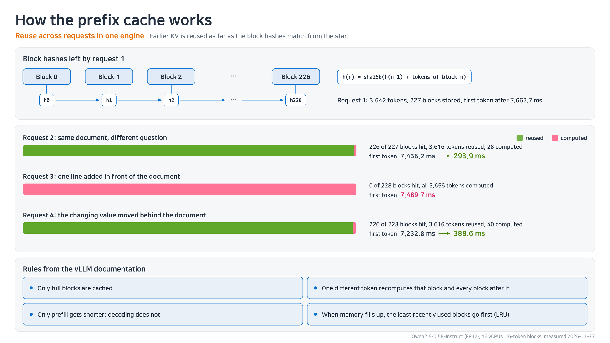
I implemented the same idea with 16-token blocks and SHA-256 to check it. The script stores the KV and block hashes of request 1, counts how many blocks of the next request match from the start, and passes that much KV to the model.
BLOCK = 16
def block_hashes(ids):
"""Hash of a block = sha256(hash of the previous block + tokens of this block). Full blocks only."""
hashes, parent = [], b""
for i in range(0, len(ids) - len(ids) % BLOCK, BLOCK):
parent = hashlib.sha256(parent + repr(tuple(ids[i:i + BLOCK])).encode()).digest()
hashes.append(parent)
return hashes
def lookup(ids):
"""Number of blocks found in the store, counted from the start. Stops at the first block that differs."""
hits = 0
for h in block_hashes(ids):
if h not in store:
break
hits += 1
return hits{"request": "2 same document, different question", "prompt_tokens": 3644, "blocks": 227, "blocks_hit": 226,
"tokens_reused": 3616, "tokens_computed": 28, "first_token_ms_no_reuse": 7436.2, "first_token_ms_with_reuse": 293.9, "same_output": true}
{"request": "3 one line added in front of the document", "prompt_tokens": 3656, "blocks": 228, "blocks_hit": 0,
"tokens_reused": 0, "tokens_computed": 3656, "first_token_ms_no_reuse": 7478.8, "first_token_ms_with_reuse": 7489.7, "same_output": true}
{"request": "4 changing value moved behind the document", "prompt_tokens": 3656, "blocks": 228, "blocks_hit": 226,
"tokens_reused": 3616, "tokens_computed": 40, "first_token_ms_no_reuse": 7232.8, "first_token_ms_with_reuse": 388.6, "same_output": true}Request 2, a different question on the same document, matched 226 of 227 blocks and computed only 28 tokens. The time to compute the first token fell from 7,436.2 ms to 293.9 ms, and the output was the same as without reuse.
Request 3 has one line with the request time in front of the document. The hash of the first block changed, none of the later blocks matched, and all 3,656 tokens were computed again. Request 4 moves the same value into the question behind the document, and 226 blocks matched again. Where a prompt carries values such as the time, a request ID or a user name decides the hit rate.
The prefix cache shortens prefill; the decode time that produces the answer stays the same. Only full blocks are cached, and when memory runs short the least recently used blocks are deleted first. In the earlier post, measured on GPUs, the TTFT of a 14,984-token prompt was 4,194.8 ms when recomputed and 131.0 ms on a hit in the GPU memory of the same server.
03
When you call a model through an API, the inference engine belongs to the provider, and so does the prefix cache. The prompt cache is that cache exposed as an API feature with its own prices. What it stores is still KV. The Claude API documentation says that KV cache representations and hashes are held in memory and that the raw text of prompts and responses is not stored. The OpenAI documentation also says that the prompt cache stores KV tensors, not the tokens.
What the user decides is where the repeated part ends. With the Amazon Bedrock Converse API you place a cachePoint, and with the Claude API a cache_control, at the end of the fixed content. The cache covers the whole prefix in the order tools, system, messages, and it hits only when the content is exactly the same up to that point.
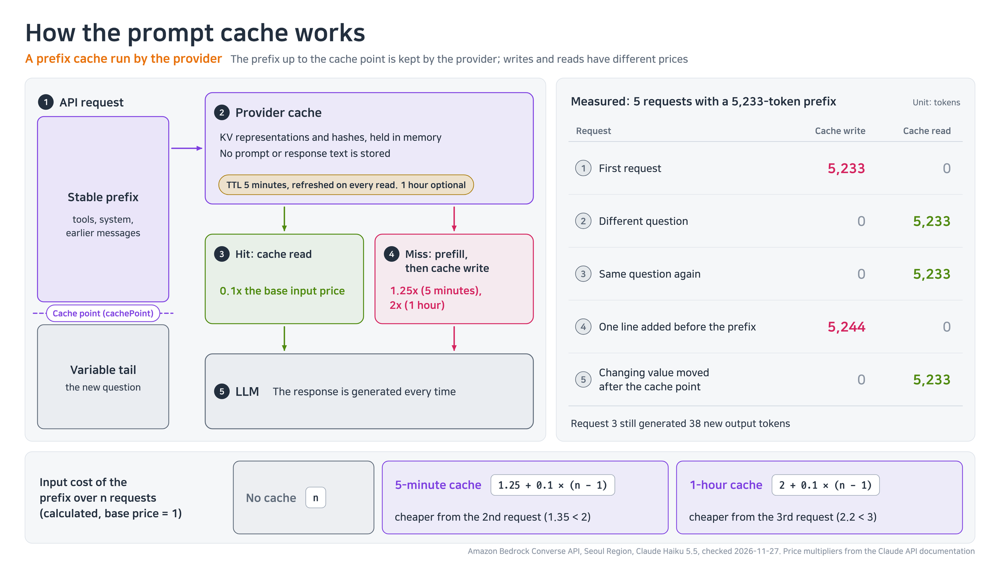
Unlike the prefix cache, the prompt cache has a set lifetime and set prices. According to the Claude API documentation the default lifetime (TTL) is 5 minutes, it is refreshed at no extra cost on every read, and 1 hour can be chosen. A cache write costs 1.25 times the base input price (2 times for 1 hour), and a cache read costs 0.1 times, or 0.05 or 0.025 times on some models. There is also a minimum cacheable length. In the Bedrock documentation the minimum is 512 to 4,096 tokens depending on the model.
I sent 5 requests with the same system prompt to Claude Haiku 5.5 on Bedrock in the Seoul Region and read the cache tokens in the responses.
resp = client.converse_stream(
modelId="global.anthropic.claude-haiku-5-5",
system=[{"text": system_text}, {"cachePoint": {"type": "default"}}], # the prefix to cache ends here
messages=[{"role": "user", "content": [{"text": question}]}],
inferenceConfig={"maxTokens": 60},
){"request": "1 first request", "inputTokens": 25, "cacheWriteInputTokens": 5233, "cacheReadInputTokens": 0, "outputTokens": 18, "ttft_ms": 738}
{"request": "2 different question", "inputTokens": 22, "cacheWriteInputTokens": 0, "cacheReadInputTokens": 5233, "outputTokens": 38, "ttft_ms": 742}
{"request": "3 same question again", "inputTokens": 22, "cacheWriteInputTokens": 0, "cacheReadInputTokens": 5233, "outputTokens": 38, "ttft_ms": 744}
{"request": "4 line added before the prefix", "inputTokens": 22, "cacheWriteInputTokens": 5244, "cacheReadInputTokens": 0, "outputTokens": 47, "ttft_ms": 681}
{"request": "5 changing value after the cache point", "inputTokens": 33, "cacheWriteInputTokens": 0, "cacheReadInputTokens": 5233, "outputTokens": 38, "ttft_ms": 777}The first request wrote 5,233 tokens to the cache, and the second, with only the question changed, read the same 5,233 tokens from it. The result of the prefix cache experiment showed up here too. Request 4, with one line in front of the prefix, read 0 and wrote 5,244 tokens again, and request 5, with that value moved behind the cache point, read from the cache again.
Request 3 is exactly the same request as request 2. It still generated 38 output tokens again. The prompt cache does not store the answer, and the Claude API documentation also says that prompt caching has no effect on output generation. TTFT was between 681 ms and 777 ms for all five requests, with no visible difference. At this length prefill appears to be a small share of TTFT.
The cost can be checked by calculation. Sending a prefix n times costs n in input without a cache and 1.25 + 0.1 × (n - 1) with the 5-minute cache. At the second request that is 2 against 1.35, so one more read within the lifetime already lowers the cost, and a prompt that is never read again costs 25% more. The 1-hour cache lowers the cost from the third request.
An agent sends the same system prompt, tool definitions and earlier conversation again on every turn, so the prompt cache has a large effect there. In an earlier post that added up 14 days of Claude Code session records, 98% of the input tokens were cache reads.
How the cache is activated differs by provider. The OpenAI API has prompt caching activated by default on supported models, and the Amazon Nova models on Bedrock have Implicit Prompt Caching, which works without any setting.
04
The semantic cache differs from the first three in what it stores. It keeps questions together with their responses, and when a new question is close in meaning to an earlier one it returns the stored response without calling the model. To find questions that mean the same in different words, it turns each question into an embedding vector, compares similarity, and treats a similarity at or above a threshold as a hit.
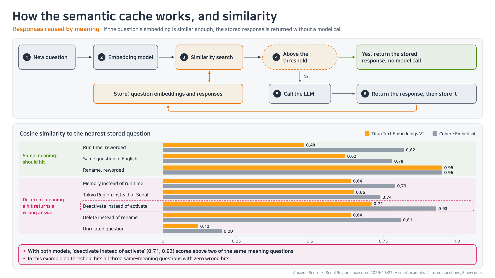
A hit calls only the embedding model, so this cache reduces cost and latency the most. In the benchmark in the ElastiCache documentation, a threshold of 0.75 reduced inference cost by up to 86% and the responses served from the cache were 91% accurate. There is a trade-off. The first three caches reuse only when the tokens are exactly the same, while the semantic cache reuses when the question is merely similar, so it can return the response to a different question.
To see how similar a question has to be to count as the same, I stored 4 questions and measured the similarity of 8 new ones with two embedding models. Three of the new questions mean the same as a stored one (hit) and five mean something else (miss). The questions are in Korean, apart from one in English; the row labels in Figure 5 give the meaning of each.
def titan_v2(text):
body = json.dumps({"inputText": text, "dimensions": 1024, "normalize": True})
out = client.invoke_model(modelId="amazon.titan-embed-text-v2:0", body=body)
return json.loads(out["body"].read())["embedding"]
stored = [(q, embed(q)) for q in STORED] # the 4 stored questions
for expect, q in QUERIES: # the 8 new questions
v = embed(q)
sim, nearest = max((cosine(v, sv), sq) for sq, sv in stored) # nearest stored question and its similaritymodel amazon.titan-embed-text-v2:0 region ap-northeast-2
hit 0.4756 람다 함수는 최대 몇 분까지 실행할 수 있나요? -> Lambda 함수의 최대 실행 시간은 얼마인가요?
hit 0.6190 What is the maximum timeout of a Lambda function? -> Lambda 함수의 최대 실행 시간은 얼마인가요?
hit 0.9480 S3 버킷의 이름을 바꾸는 것이 가능한가요? -> S3 버킷 이름을 변경할 수 있나요?
miss 0.6364 Lambda 함수의 최대 메모리는 얼마인가요? -> Lambda 함수의 최대 실행 시간은 얼마인가요?
miss 0.6502 도쿄 리전의 가용 영역은 몇 개인가요? -> 서울 리전의 가용 영역은 몇 개인가요?
miss 0.7129 프롬프트 캐싱을 비활성화하는 방법을 알려 주세요. -> 프롬프트 캐싱을 활성화하는 방법을 알려 주세요.
miss 0.6379 S3 버킷을 삭제할 수 있나요? -> S3 버킷 이름을 변경할 수 있나요?
miss 0.1182 오늘 점심 메뉴를 추천해 주세요. -> 프롬프트 캐싱을 활성화하는 방법을 알려 주세요.
model global.cohere.embed-v4:0 region ap-northeast-2
hit 0.8157 람다 함수는 최대 몇 분까지 실행할 수 있나요? -> Lambda 함수의 최대 실행 시간은 얼마인가요?
hit 0.7817 What is the maximum timeout of a Lambda function? -> Lambda 함수의 최대 실행 시간은 얼마인가요?
hit 0.9503 S3 버킷의 이름을 바꾸는 것이 가능한가요? -> S3 버킷 이름을 변경할 수 있나요?
miss 0.7879 Lambda 함수의 최대 메모리는 얼마인가요? -> Lambda 함수의 최대 실행 시간은 얼마인가요?
miss 0.7420 도쿄 리전의 가용 영역은 몇 개인가요? -> 서울 리전의 가용 영역은 몇 개인가요?
miss 0.9279 프롬프트 캐싱을 비활성화하는 방법을 알려 주세요. -> 프롬프트 캐싱을 활성화하는 방법을 알려 주세요.
miss 0.8095 S3 버킷을 삭제할 수 있나요? -> S3 버킷 이름을 변경할 수 있나요?
miss 0.2046 오늘 점심 메뉴를 추천해 주세요. -> 프롬프트 캐싱을 활성화하는 방법을 알려 주세요.With both models a question with the opposite meaning scored higher than a question with the same meaning. The new question asking how to deactivate prompt caching scored 0.7129 and 0.9279 against the stored question asking how to activate it. The first question, the same question in other words, scored 0.4756 and 0.8157. For these 8 questions neither model has a threshold that hits all three same-meaning questions with zero wrong hits.
This is a small example of 8 questions and says nothing about accuracy in general. Still, in the same benchmark the responses served from the cache were 92.6% accurate even with the threshold raised to 0.95. A threshold reduces wrong hits; it does not remove them.
So the semantic cache fits places where the same questions repeat and the responses do not change often. The ElastiCache documentation advises starting with a high threshold of 0.90 to 0.95 and lowering it while watching accuracy. It also describes narrowing what can hit with filters such as product ID, Region or user segment, and deleting old responses with a TTL.
05
The four are not options to choose between; they work on top of each other. A request that misses the semantic cache goes to the model. Its prefix is reused by the prompt cache or the prefix cache, and the KV cache works while the answer is generated. The table lists misunderstandings that come up where they meet, next to what really happens.
| Misunderstanding | What really happens |
|---|---|
| With the prompt cache activated, the same question gets a stored answer | The answer is generated every time and the output tokens are billed as usual. The cache that returns a stored response is the semantic cache |
| If the middle of the prefix differs a little, the part after it is still reused | Everything from the block with the changed token onward is computed again |
| A prefix hit makes the whole answer arrive sooner | What gets shorter is the time to the first token; the speed of generating tokens stays the same |
| Adding servers leaves the hit rate as it is | KV stays on the server that handled the request, so the next request misses if it goes to another server |
| A semantic cache is safe once the threshold is high | Wrong hits become fewer but do not disappear, and the hit rate falls with them |
Table 2. Common misunderstandings where the four caches meet, and what really happens
The fourth row is the problem you meet when scaling an inference engine to several servers. You can send a session to the same server, or add a shared cache that lets the servers use KV together. I tested the shared cache in the Amazon ElastiCache Distributed KV Caching post. The Bedrock documentation notes that with cross-Region inference cache writes can increase at times of high demand.
A cache that reuses KV across requests also has an isolation scope. The vLLM documentation describes cache_salt as a way to stop attacks that infer cached content from differences in response time. With this value in a request, KV is reused only among requests that carry the same value. Claude's prompt cache is isolated by organization, and on the Claude API by workspace as well.
06
Even with the right settings a cache misses when the prefix changes. No error is raised when that happens, so you have to look at the values in the responses and metrics yourself.
| Cache | Value to check | How to read it |
|---|---|---|
| KV cache | No separate metric | The engine uses it by default. The memory used by KV grows with context length and the number of concurrent requests |
| Prefix cache (vLLM) | vllm:prefix_cache_hits, vllm:prefix_cache_queries | The increase of the first divided by the increase of the second is the hit rate in tokens. For a value per request, start the server with --enable-prompt-tokens-details and read usage.prompt_tokens_details.cached_tokens |
| Prompt cache (Bedrock Converse API) | cacheReadInputTokens, cacheWriteInputTokens | A read of 0 with a write on every request means the prefix changes from request to request |
| Prompt cache (Claude API) | cache_read_input_tokens, cache_creation_input_tokens | If both are 0 the prompt was not cached, most often because it is shorter than the minimum length |
| Semantic cache | Hit rate, accuracy of the responses served | Take a sample of the responses served from the cache and compare each with the new question. The hit rate alone does not show wrong hits |
Table 3. Values that show whether each cache hit. Based on each documentation as of November 27, 2026
07
Start with the caches that already work. The KV cache needs no setting. If you run an inference engine yourself, look at the hit rate of the prefix cache first, and if you call an API, check the cache point and the cache tokens. In both cases the first thing to change is to put fixed content at the front of the prompt and changing values at the end. The semantic cache is the only one that can send out a wrong response, so review it last.
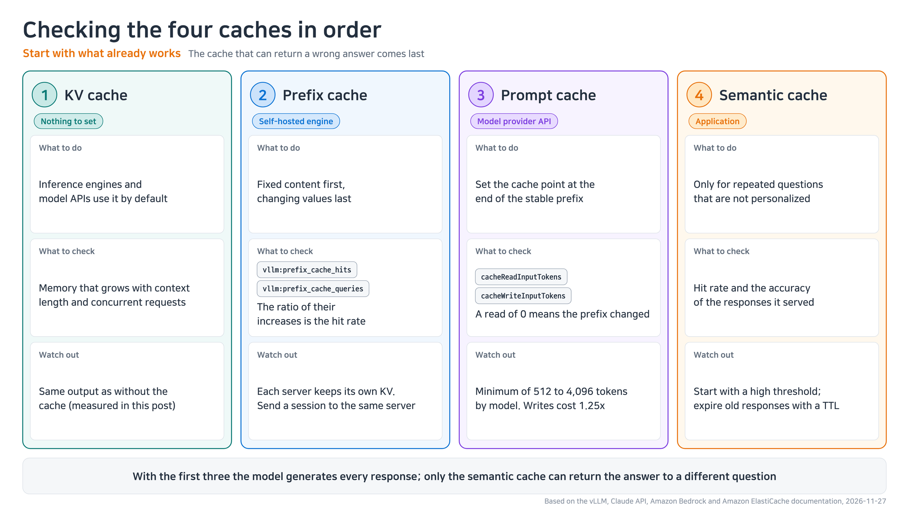
Comparing cost and performance together gives the criteria for use.
| Cache | What it costs | What it reduces | When to use it |
|---|---|---|---|
| KV cache | Memory in proportion to the number of tokens | In this post, the time to generate 40 tokens fell to one fifteenth | Always |
| Prefix cache | No separate cost. The KV stays in free blocks and is deleted when the memory is needed | In this post, the time to compute the first token fell to one twenty-fifth | Always when prefixes repeat. With several servers, check the routing as well |
| Prompt cache | Cache writes at 1.25 times | Cache reads at 0.1 times | When the same prefix is sent again at least once within the lifetime |
| Semantic cache | Embedding calls, a vector store, and the chance of a wrong response | The whole model call for requests that hit | Only when the same questions repeat and a wrong response costs little |
Table 4. When to use each of the four caches, by cost and performance. Multipliers follow the Claude API documentation; measured values come from a 0.5B model on a CPU
The first three caches avoid doing the same computation twice, so once the prefix is kept stable there is almost nothing to lose. The semantic cache skips the computation altogether, so it saves the most and carries the risk of a wrong response. Before applying a semantic cache, I recommend measuring similarity with real questions from the service you run.
| No. | 출처Source | 종류Kind | 확인한 날Checked |
|---|---|---|---|
| 1 | How caching works | Hugging Face Transformers 문서Hugging Face Transformers docs | 2026-11-27 |
| 2 | Automatic Prefix Caching (design) | vLLM 문서vLLM docs | 2026-11-27 |
| 3 | Automatic Prefix Caching (features) | vLLM 문서vLLM docs | 2026-11-27 |
| 4 | vllm/config/cache.py | vLLM 소스vLLM source | 2026-11-27 |
| 5 | Prompt caching | Claude API 문서Claude API docs | 2026-11-27 |
| 6 | Prompt caching for faster model inference | 공식 문서AWS docs | 2026-11-27 |
| 7 | Prompt caching | OpenAI API 문서OpenAI API docs | 2026-11-27 |
| 8 | Overview of semantic caching | 공식 문서AWS docs | 2026-11-27 |
| 9 | Impact and benchmarks | 공식 문서AWS docs | 2026-11-27 |
| 10 | Best practices | 공식 문서AWS docs | 2026-11-27 |
| 11 | GPTCache: A Library for Creating Semantic Cache for LLM Queries | 오픈 소스 저장소Open-source repository | 2026-11-27 |
| 12 | Qwen/Qwen2.5-0.5B-Instruct | 모델 카드Model card | 2026-11-27 |
| 13 | Amazon ElastiCache Distributed KV Caching | 이 블로그의 이전 글Earlier post on this blog | 2026-11-27 |